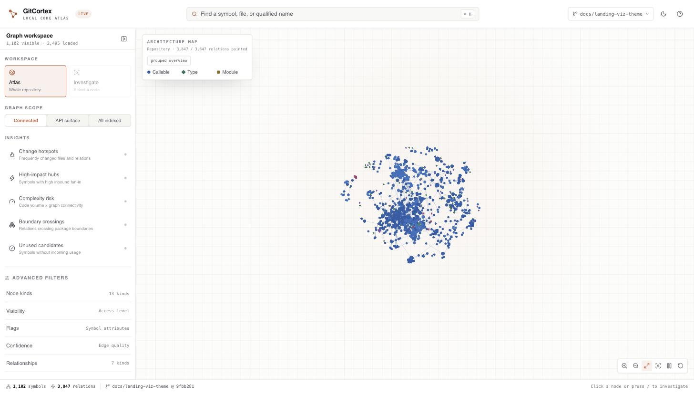
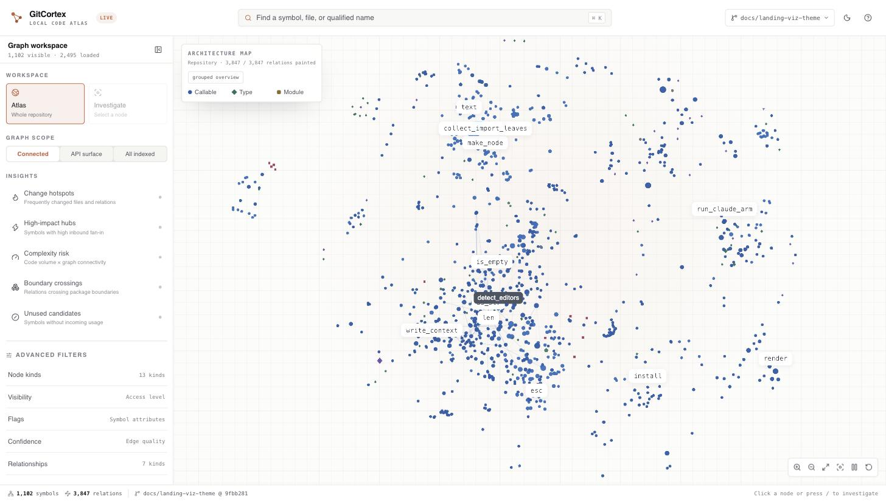
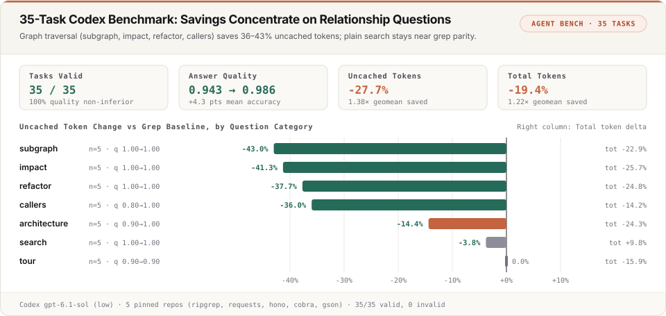

Explore callers, understand change impact, and query a branch-aware local graph with explicit freshness and source evidence — alongside your ordinary source search and tests. Indexing and graph queries run locally in Rust and embedded KuzuDB with zero LLM calls.
brew install bharath03-a/tap/gitcortex
django (48.5k nodes, 267.5k edges) in 5.3 s and ripgrep in 0.9 s. 1-file gcx hook runs in 423 ms on ripgrep and 821 ms on tokio. gcx storage gc & compact reclaim 84%+ disk after 5-branch churn.Static graphs only stay trustworthy when updates are fast, branches stay isolated, and degraded states say so explicitly instead of returning an empty caller list. Step through the four moments that matter in a real coding session.
Four git hooks (post-commit, post-merge, post-rewrite,
post-checkout) diff from the last indexed SHA rather than HEAD~1,
so rebases, amends, and branch switches keep each branch's table synchronized — and
manual gcx hook or gcx index recovers immediately whenever hooks are skipped.
gcx viz serves the graph as a local web app: an atlas for
orientation across the whole repository, and an investigation canvas for
tracing one symbol's exact neighbourhood. Both run against your own indexed
repository. These are real captures of GitCortex indexing itself.


Parsing, graph storage, and MCP/CLI queries run locally on your machine with no GitCortex cloud backend or LLM calls. Setup downloads packages/binaries as usual, and your AI assistant's own model requests follow its configured network path.
Only changed files are re-parsed and reconciled from the last indexed SHA. Every response surfaces index.state (ready, stale, missing, or degraded) with recovery guidance.
Each branch gets its own isolated storage namespace and supports structural branch_diff. Dry-run-first gcx storage gc and compact reclaim disk from deleted branches.
gcx serve (MCP) and gcx query (CLI) accelerate caller, impact, and neighbourhood lookup while working alongside ordinary grep, file reads, and your test suite.
A tree-sitter backend provides one structural extraction pipeline across every supported language: definitions, calls, imports, type usages, and Markdown references.
Ranked lexical search over symbol names and qualified paths with filters, compact/full modes, and pagination so assistants narrow candidates before reading files. Optional local semantic search (fastembed-rs) is separately configurable and downloads local model weights on first enable.
Read-only planning maps supported codebase questions to bounded relationship queries (find_callers, symbol_context, get_subgraph, pre_edit_impact) and asks for clarification when a question falls outside supported graph actions.
Inspect and reclaim multi-branch disk usage with dry-run-first gcx storage list / prune / gc / compact. Verify hooks, store health, and editor wiring via gcx doctor and gcx status --json.
gcx viz renders the local graph with Cosmograph WebGL; gcx export emits Mermaid, DOT, JSON, HTML, SVG, and GraphML. Opt-in local diagnostic MCP call metadata is bounded to 2 MiB and excludes raw arguments and contents (usage insights and an Activity UI remain future work).
gcx init indexes the repo, installs git hooks, registers MCP, and writes concise guidance so Claude Code, Codex CLI, Cursor, Windsurf, Copilot, and Antigravity know when to reach for graph tools — and when to stick to grep.
Pre-built binaries cover macOS (arm64, x86_64) and Linux (x86_64, arm64). On Windows,
use WSL2. Run gcx init in a repo to index, install git hooks, and wire in
your AI assistant (or gcx init --editor none for CLI-only setup).
# macOS or Linux (v0.8.0)
brew install bharath03-a/tap/gitcortex
# Index, install git hooks, and interactively wire in your AI assistant
gcx init
gcx doctorInstalls the pre-built gcx binary. No Rust, Python, or Node.js runtime required.
# Python 3.8+ wheel (bundles pre-built v0.8.0 binary)
pip install gitcortex==0.8.0
# Or isolated
pipx install gitcortex==0.8.0
uv tool install gitcortex==0.8.0
gcx init && gcx doctorWheels bundle pre-built binaries for macOS arm64/x86_64 and Linux x86_64/arm64. No Rust toolchain required.
# Build from crates.io (Rust 1.80+)
cargo install gitcortex --version 0.8.0 --locked
gcx init && gcx doctorKuzuDB builds from source under Cargo, so the first compilation takes roughly five minutes.
# Global install (bundles pre-built v0.8.0 binary)
npm install -g gitcortex@0.8.0
# Or pnpm / bun
pnpm add -g gitcortex@0.8.0
bun add -g gitcortex@0.8.0
gcx init && gcx doctorBundles the same pre-built binaries as the Python wheel.
# macOS arm64 (v0.8.0)
curl -LO https://github.com/bharath03-a/GitCortex/releases/download/v0.8.0/gitcortex-aarch64-apple-darwin.tar.xz
tar -xf gitcortex-aarch64-apple-darwin.tar.xz
sudo mv gcx /usr/local/bin/
# Linux x86_64 (v0.8.0)
curl -LO https://github.com/bharath03-a/GitCortex/releases/download/v0.8.0/gitcortex-x86_64-unknown-linux-gnu.tar.xz
tar -xf gitcortex-x86_64-unknown-linux-gnu.tar.xz
sudo mv gcx /usr/local/bin/All platform archives and checksums are published on the releases page.
gcx clean && gcx init (or run gcx init when prompted on schema mismatch), then verify with gcx doctor.
Add gcx serve to your MCP configuration (or call gcx query ... directly from CLI agents). Every response uses an object envelope carrying explicit readiness and coverage metadata.
lookup_symbol(name)Every definition matching a symbol name across the active branchfind_callers(name, depth?)Cross-file diversified callers with file:line evidencesymbol_context(name)360° view: definition, callers, callees, and type usagesget_subgraph(name, depth)Bounded neighbourhood: callers, callees, implementationssearch_code(query)Progressive lexical search with filters, compact/full modes, and paginationpre_edit_impact(name)Production-first transitive caller impact with separate test countsbranch_diff(from, to)Structural symbol & edge difference between two indexed branchesfind_god_nodes / find_clustersIn-degree hub detection and deterministic label-propagation clusters.mcp.json (project root)
{
"mcpServers": {
"gitcortex": {
"command": "gcx",
"args": ["serve"],
"env": {}
}
}
}Works with Claude Code, Codex CLI, Cursor, Windsurf, Copilot, Antigravity, and any other MCP host.
Current v0.8.0 validation runs are kept strictly separate from older dated panels. Methodology, failures, and trade-offs are published alongside the wins on the full benchmarks page.
Full v0.8.0 pre-release validation across 10 pinned repositories: 45/45 model-free retrieval gate, 35-task Codex CLI (gpt-6.1-sol, low reasoning) agent suite, 10-repo cold indexing, and 3-repo incremental hook + 5-branch storage reclaim.
1.00 MRR and 1.00 file recall across 5 core repos (35 tasks) and 5 large repos (10 tasks).
35/35 valid, 35/35 quality non-inferior (0.943 → 0.986); 36–43% saved on relationship tasks.
Measured on ripgrep (down from 4,170 ms). tokio: 821 ms; django hub: 6.9 s.
Dry-run-first storage gc + compact reclaims 84.1–84.9% across ripgrep, tokio, django.

Plain lexical search stays near grep parity (−3.8% uncached, +9.8% total tokens); unbudgeted unforced adoption improved pass rate from 14/16 to 16/16 (10/10 adoption, 0/6 false restraint calls) at higher total token spend. See all 5 graphs, competitor head-to-heads, and exact tables on benchmarks.html and compare.html.
Historical evidence (2026-07-17): Median of 3 runs against Claude haiku-4.5 (pre-0.8.0), errored and rate-limited sessions excluded. Kept dated and separate from current 35-task v0.8.0 results.
Across search, tour, callers, and subgraph questions on five repositories.
Summed across all valid questions and repositories in that 2026-07-17 run.
Roughly half the turns to the same answer under that client and harness.
Java (gson) was the weakest repository in this earlier run. Full historical report: final-report-2026-07-17.html.
Historical evidence (2026-07-12): Single-round v0.6.2 baseline, superseded by 2026-07-17 and v0.8.0 validation. Kept for the historical record.
First refactor-impact run; included one 13.5× outlier on ripgrep.
Early single-round signal across the 5 pinned repositories.
hono excluded from this figure after an errored session.
gson and hono were weak spots at v0.6.2 (both resolved by v0.8.0). Full historical report: final-report-2026-07-12.html.
gcx doctor.
Index your repository locally, verify hook & editor readiness with gcx doctor,
and keep ordinary source inspection and tests right next to the graph.